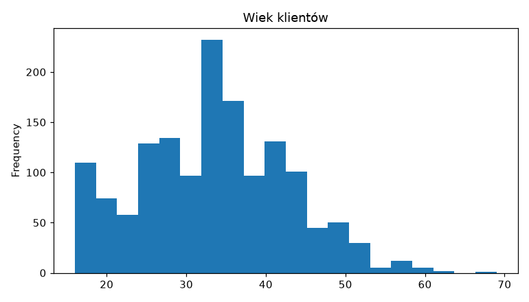
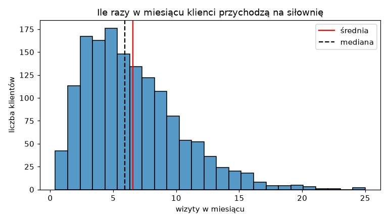
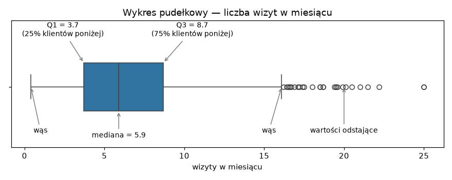
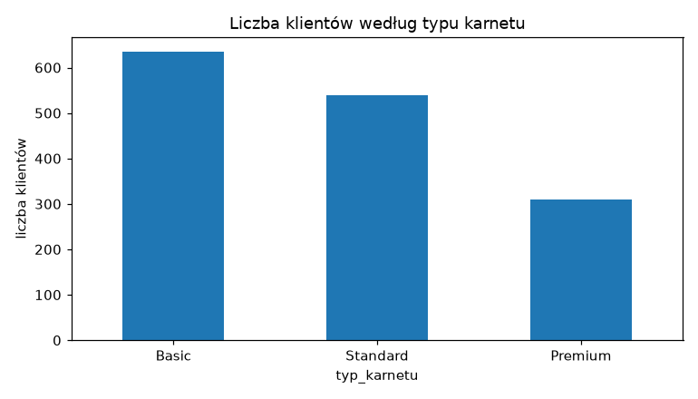
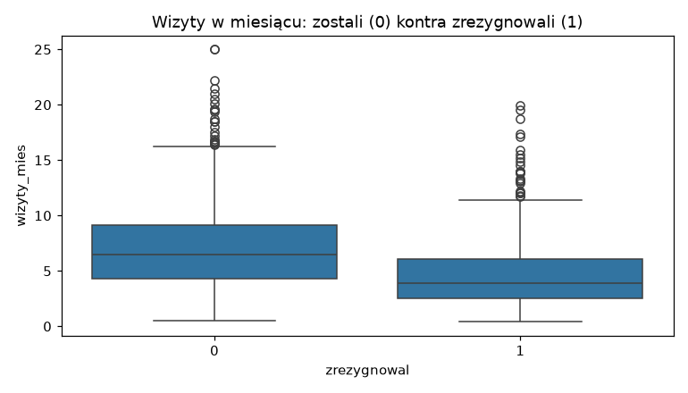
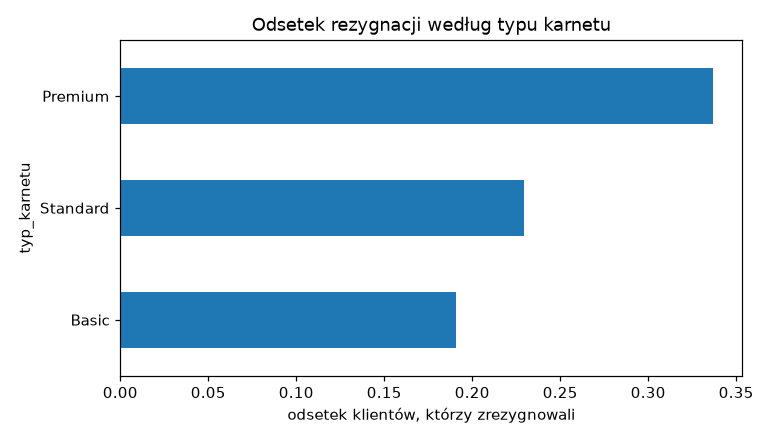
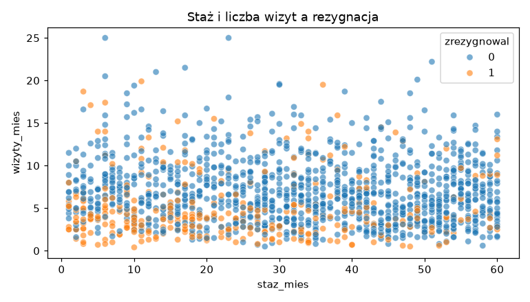
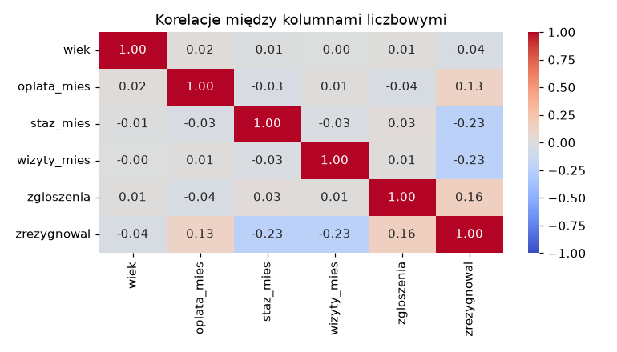

Zajęcia 3#
Eksploracyjna analiza danych i wizualizacja#
Dane są wczytane i wyczyszczone. Kusi, żeby od razu wrzucić je do modelu — i to jest błąd, który popełnia prawie każdy na początku. Zanim cokolwiek policzysz, trzeba dane obejrzeć: jak rozkładają się wartości, co jest typowe, co odstaje i czym różnią się grupy, które nas interesują.
Ten etap nazywa się eksploracyjną analizą danych (EDA, exploratory data analysis), a jego głównym narzędziem jest wykres. Tabela z tysiącem liczb nie mówi nic. Ten sam tysiąc liczb na histogramie mówi wszystko w dwie sekundy.
Po dzisiejszych zajęciach będziesz w stanie:
- narysować histogram, wykres pudełkowy, słupkowy i punktowy w matplotlib i seaborn,
- odczytać z histogramu kształt rozkładu i wyjaśnić, dlaczego średnia różni się od mediany,
- odczytać wykres pudełkowy i wskazać wartości odstające,
- porównać dwie grupy klientów wykresem i tabelą krzyżową,
- policzyć korelacje, narysować je jako mapę ciepła i wiedzieć, czego korelacja nie mówi.
Przykłady z zajęć w Colabie
Cały materiał z tej strony jest też w gotowym notatniku — z kodem do uruchomienia. Otwórz go i uruchamiaj komórki po kolei, czytając materiał. Żeby zachować swoje zmiany, zapisz kopię: Plik → Zapisz kopię na Dysku.

Gdzie jesteśmy
W workflow projektu z pierwszych zajęć to punkt 4 — eksploracja. Ćwiczymy na danych siłowni, które wyczyściłeś dwa tygodnie temu. W zadaniu dostaniesz nowy zbiór — kredyty bankowe — i za godzinę na Uczeniu głębokim trafi on do modelu. To, co dziś zobaczysz na wykresach, powie Ci, czego się po tym modelu spodziewać.
Plan na dziś#
| Blok | Czas |
|---|---|
| Po co EDA i pierwszy wykres | 8 min |
| Jedna zmienna — histogram, wykres pudełkowy, słupki | 15 min |
| Dwie zmienne — porównanie grup, tabela krzyżowa, wykres punktowy | 12 min |
| Korelacja i mapa ciepła | 7 min |
| Dobre praktyki i ściągawka | 3 min |
| Zadanie 3 | 45 min |
Po co EDA#
EDA zaczyna się od pytań, nie od wykresów. Dla danych siłowni naturalne pytania to:
- Kim są nasi klienci? Ile mają lat, jak często przychodzą, jaki mają karnet?
- Czy coś w danych wygląda podejrzanie?
- Czym różnią się klienci, którzy zrezygnowali, od tych, którzy zostali?
Trzecie pytanie jest najważniejsze, bo to dokładnie to, czego za chwilę będzie się uczył model. Jeśli na wykresie nie widać żadnej różnicy między grupami — model też jej prawdopodobnie nie znajdzie.
Dane, na których pracujemy#
Wczytujemy wzorcową, wyczyszczoną wersję danych siłowni z zajęć 2:
import pandas as pd
URL = "https://kubzal.github.io/wsb-merito/semestr_zimowy_2026_27/uczenie_glebokie/dane/silownia_czyste.csv"
df = pd.read_csv(URL)
df.describe().round(1)
wiek oplata_mies staz_mies wizyty_mies zgloszenia zrezygnowal
count 1484.0 1484.0 1484.0 1484.0 1484.0 1484.0
mean 33.3 130.5 31.2 6.5 0.8 0.2
std 9.5 38.5 17.2 3.8 0.9 0.4
min 16.0 79.0 1.0 0.4 0.0 0.0
25% 26.8 99.0 17.0 3.7 0.0 0.0
50% 33.0 129.0 32.0 5.9 1.0 0.0
75% 40.0 139.0 46.0 8.7 1.0 0.0
max 69.0 199.0 60.0 25.0 5.0 1.0
describe() znasz od pierwszych zajęć. To dobry start, ale 48 liczb naraz
trudno ogarnąć wzrokiem — i nie odpowiadają one na pytanie 3. Pora na wykresy.
Narzędzia: matplotlib i seaborn#
W Pythonie rysuje się głównie dwiema bibliotekami. Obie są w Colabie od razu:
- matplotlib — podstawa, na której stoi wszystko inne. Daje pełną kontrolę
nad wykresem: tytuły, osie, kolory, linie. Konwencja importu to
plt. - seaborn — nakładka na matplotlib, stworzona do pracy z DataFrame'ami.
Jedna linijka zamiast dziesięciu, zwłaszcza przy porównywaniu grup. Konwencja
importu to
sns.
Do tego pandas sam potrafi narysować kolumnę metodą .plot() — pod spodem też
używa matplotlib.
Pierwszy wykres#

Większość klientów ma 20–45 lat, starszych jest coraz mniej. Ale jeden słupek wyraźnie odstaje — przy 33 latach jest dwa razy więcej osób niż obok. Skąd?
To my go zrobiliśmy. Na poprzednich zajęciach uzupełniliśmy brakujący i niemożliwy wiek medianą — a mediana wynosi 33. Ok. 60 osób dostało ten sam wiek, stąd słupek. Pierwsza lekcja EDA: dane pamiętają, co im zrobiłeś. Uzupełnianie braków zawsze zostawia ślad i dobrze jest umieć go rozpoznać.
Średnik na końcu linii
W Colabie nad wykresem pojawia się czasem napis w rodzaju
<Axes: title={'center': 'Wiek klientów'}>. To nie błąd, tylko wartość
zwrócona przez ostatnią linijkę komórki. Żeby go ukryć, dopisz na końcu
plt.show() albo postaw średnik po ostatniej linijce.
Jedna zmienna#
Histogram — jak rozkładają się wartości#
Histogram dzieli zakres wartości na przedziały (bins) i pokazuje, ile obserwacji wpada do każdego z nich. Narysujmy liczbę wizyt w miesiącu, tym razem w seaborn, i dorysujmy średnią i medianę:
sns.histplot(data=df, x="wizyty_mies", bins=25)
plt.axvline(df["wizyty_mies"].mean(), color="red", label="średnia")
plt.axvline(df["wizyty_mies"].median(), color="black", linestyle="--", label="mediana")
plt.legend()
plt.title("Ile razy w miesiącu klienci przychodzą na siłownię")
plt.xlabel("wizyty w miesiącu")
plt.ylabel("liczba klientów")

Wszystkie linijki od plt. dotyczą tego samego wykresu — matplotlib dokłada
kolejne elementy do ostatnio narysowanego. axvline rysuje pionową linię
(vertical line) w podanym miejscu osi X.
Co widać:
- Typowy klient przychodzi 3–8 razy w miesiącu.
- Rozkład ma długi ogon w prawo — garstka osób chodzi 15–25 razy. Taki rozkład nazywa się prawoskośnym.
- Średnia (6.55) jest większa od mediany (5.9), bo ogon ciągnie ją w prawo. Pamiętasz drogi laptop z pierwszych zajęć? To ten sam mechanizm.
Prawoskośne są prawie wszystkie dane „o ludziach i pieniądzach": zarobki, ceny mieszkań, wartość zamówień, liczba obserwujących. Dlatego w raportach o wynagrodzeniach GUS podaje medianę, a nie tylko średnią.
Ile słupków?
bins decyduje o tym, jak szczegółowy jest histogram. Za mało słupków
(np. 5) — wszystko zlewa się w jedną bryłę. Za dużo (np. 200) — wykres robi
się poszarpany i widać głównie szum. 20–30 to zwykle dobry początek;
potem warto spróbować dwóch–trzech wartości i wybrać najczytelniejszą.
Wykres pudełkowy — typowe wartości i odstające#
Histogram pokazuje kształt rozkładu. Wykres pudełkowy (boxplot) streszcza go do pięciu liczb i od razu wskazuje wartości odstające:
Ten sam wykres z opisanymi elementami:

Jak go czytać:
- Pudełko to środkowe 50% klientów — od pierwszego kwartyla (Q1 = 3.7) do
trzeciego (Q3 = 8.7). Te same liczby co
25%i75%wdescribe(). - Kreska w pudełku to mediana.
- Wąsy sięgają do najdalszych „normalnych" wartości — nie dalej niż półtorej długości pudełka od jego krawędzi.
- Kółka za wąsami to wartości odstające (outliers) — tu 28 osób, które chodzą na siłownię ponad 16 razy w miesiącu.
Odstająca to nie to samo co niemożliwa
Na poprzednich zajęciach wiek 230 lat zamieniliśmy na brak, bo był niemożliwy. Ktoś, kto chodzi na siłownię 20 razy w miesiącu, jest nietypowy, ale całkowicie prawdziwy. Wykres pudełkowy wskaże wartości odstające, ale to Ty decydujesz, czy to błąd, czy po prostu ciekawy przypadek. Domyślnie: zostawiasz.
Kategorie — wykres słupkowy#
Dla kolumny tekstowej histogram nie ma sensu. Liczymy wystąpienia
value_counts() (znasz je z pierwszych zajęć) i rysujemy jako słupki:
df["typ_karnetu"].value_counts().plot(kind="bar", title="Liczba klientów według typu karnetu")
plt.xticks(rotation=0)
plt.ylabel("liczba klientów")

plt.xticks(rotation=0) obraca podpisy pod słupkami do poziomu — pandas
domyślnie stawia je pionowo, co przy krótkich nazwach tylko przeszkadza.
A wykres kołowy?
Ludzkie oko dużo lepiej porównuje długości słupków niż kąty wycinków. Przy trzech kategoriach koło jeszcze ujdzie, przy sześciu już nikt nie powie, który wycinek jest większy. W analizie danych prawie zawsze wybieraj słupki.
Dwie zmienne#
Teraz pytanie numer 3: czym różnią się klienci, którzy odeszli?
Liczba kontra grupa — wykresy pudełkowe obok siebie#
sns.boxplot(data=df, x="zrezygnowal", y="wizyty_mies")
plt.title("Wizyty w miesiącu: zostali (0) kontra zrezygnowali (1)")

To jest najważniejszy wykres dnia. Seaborn podzielił klientów według kolumny
x i dla każdej grupy narysował osobne pudełko. Różnica jest wyraźna: klienci,
którzy zrezygnowali, przychodzili rzadziej. Liczbowo możesz to sprawdzić
filtrem:
odeszli = df[df["zrezygnowal"] == 1]
zostali = df[df["zrezygnowal"] == 0]
print(odeszli["wizyty_mies"].median(), zostali["wizyty_mies"].median())
Mediana 3.9 wizyty kontra 6.5. Ma to sens biznesowy: kto przestaje chodzić, ten po kilku miesiącach przestaje też płacić. To jest cecha, z której model będzie korzystał najbardziej — i rzeczywiście, drzewo z zajęć 2 na Uczeniu głębokim zadawało pytanie o wizyty jako pierwsze.
Kategoria kontra grupa — tabela krzyżowa#
Czy rezygnacje zależą od typu karnetu? Dla dwóch kolumn kategorycznych liczymy tabelę krzyżową — ile klientów jest w każdej kombinacji:
Liczby bezwzględne są mylące — klientów Basic jest dwa razy więcej niż Premium.
Potrzebujemy odsetków w każdym wierszu, czyli normalize="index":
Teraz widać: z Premium odchodzi co trzeci klient, z Basic — co piąty. Kolumnę
1 łatwo narysować:
odsetek = pd.crosstab(df["typ_karnetu"], df["zrezygnowal"], normalize="index")[1]
odsetek.sort_values().plot(kind="barh", title="Odsetek rezygnacji według typu karnetu")
plt.xlabel("odsetek klientów, którzy zrezygnowali")

kind="barh" to słupki poziome — wygodne, gdy nazwy kategorii są długie.
sort_values() układa je od najmniejszej do największej, więc wykres czyta się
jak ranking.
Grupowanie na następnych zajęciach
Odsetek rezygnacji w każdej grupie to tak naprawdę średnia kolumny
zrezygnowal (zera i jedynki) policzona osobno dla każdego karnetu. Do
liczenia czegokolwiek „w grupach" pandas ma groupby — to temat kolejnych
zajęć. Dziś wystarczy nam crosstab.
Liczba kontra liczba — wykres punktowy#
Dwie kolumny liczbowe pokazujemy jako chmurę punktów — każdy klient to jedna
kropka. Parametr hue koloruje kropki według trzeciej kolumny:
sns.scatterplot(data=df, x="staz_mies", y="wizyty_mies", hue="zrezygnowal", alpha=0.6)
plt.title("Staż i liczba wizyt a rezygnacja")

Pomarańczowe kropki (rezygnacje) skupiają się na dole wykresu — mało wizyt — i trochę gęściej po lewej, przy krótkim stażu. Odchodzą głównie nowi klienci, którzy rzadko przychodzą.
alpha=0.6 robi kropki półprzezroczystymi. Przy 1500 punktach wiele z nich
nachodzi na siebie, a dzięki przezroczystości widać, gdzie jest ich gęsto.
Korelacja#
Zamiast oglądać wykres punktowy dla każdej pary kolumn, można policzyć jedną liczbę — współczynnik korelacji. Przyjmuje wartości od −1 do 1:
| Wartość | Znaczenie |
|---|---|
| bliska 1 | gdy jedna kolumna rośnie, druga też rośnie |
| bliska 0 | brak liniowej zależności |
| bliska −1 | gdy jedna kolumna rośnie, druga maleje |
wiek oplata_mies staz_mies wizyty_mies zgloszenia zrezygnowal
wiek 1.00 0.02 -0.01 -0.00 0.01 -0.04
oplata_mies 0.02 1.00 -0.03 0.01 -0.04 0.13
staz_mies -0.01 -0.03 1.00 -0.03 0.03 -0.23
wizyty_mies -0.00 0.01 -0.03 1.00 0.01 -0.23
zgloszenia 0.01 -0.04 0.03 0.01 1.00 0.16
zrezygnowal -0.04 0.13 -0.23 -0.23 0.16 1.00
numeric_only=True pomija kolumny tekstowe — korelacji miasta z wiekiem nie da
się policzyć. Tabelę liczb dużo łatwiej czytać jako mapę ciepła:
sns.heatmap(korelacje, annot=True, fmt=".2f", cmap="coolwarm", vmin=-1, vmax=1)
plt.title("Korelacje między kolumnami liczbowymi")

annot=Truewpisuje liczby w pola,fmt=".2f"zaokrągla je do dwóch miejsc.cmap="coolwarm"— czerwony dla dodatnich, niebieski dla ujemnych, szary dla zera.vmin=-1, vmax=1ustala skalę kolorów na pełny zakres. Bez tego seaborn dopasuje skalę do danych i korelacja 0.2 może wyglądać na ciemnoczerwoną.
Interesuje nas głównie ostatni wiersz — jak każda cecha wiąże się z rezygnacją. Staż i wizyty: −0.23 (im więcej, tym rzadziej ktoś odchodzi). Zgłoszenia i opłata: dodatnie (im więcej skarg i im drożej, tym częściej). Wiek: praktycznie zero.
Przekątna to same jedynki — każda kolumna jest idealnie skorelowana sama ze sobą. Tabela jest też symetryczna, więc wystarczy czytać połowę.
Dwie pułapki korelacji
Korelacja mierzy tylko zależność liniową. −0.23 brzmi słabo, a przecież wykres pudełkowy pokazał dużą różnicę w wizytach. Zależność jest, tylko nie układa się w prostą linię — szansa odejścia rośnie gwałtownie dopiero przy bardzo małej liczbie wizyt. Dlatego korelacja nigdy nie zastępuje wykresu.
Korelacja to nie przyczynowość. Sprzedaż lodów i liczba utonięć są mocno skorelowane — bo obie rosną latem. Lody nikogo nie topią. Z samych danych nie wiemy, czy klienci odchodzą, bo przestali chodzić, czy przestali chodzić, bo już postanowili odejść.
Dobre praktyki#
Wykres w notatniku dla siebie może być byle jaki. Wykres, który ktoś inny ma zrozumieć, musi spełniać kilka warunków:
- Tytuł — najlepiej taki, który mówi, co widać.
- Podpisane osie — z jednostką, jeśli jest (zł, mies., liczba klientów).
- Jeden wykres — jedna wiadomość. Lepsze trzy proste wykresy niż jeden, na którym jest wszystko.
- Bez efektów 3D i bez koła przy więcej niż kilku kategoriach.
- Odsetki, nie liczby, gdy porównujesz grupy różnej wielkości.
Ściągawka#
| Chcę… | Kod |
|---|---|
| zaimportować biblioteki | import matplotlib.pyplot as plt i import seaborn as sns |
| histogram | sns.histplot(data=df, x="kol", bins=25) |
| pionowa linia (np. średnia) | plt.axvline(df["kol"].mean(), color="red", label="średnia") |
| wykres pudełkowy | sns.boxplot(data=df, x="kol") |
| pudełka w grupach | sns.boxplot(data=df, x="grupa", y="kol") |
| słupki dla kategorii | df["kol"].value_counts().plot(kind="bar") |
| słupki poziome | seria.plot(kind="barh") |
| tabela krzyżowa | pd.crosstab(df["a"], df["b"]) |
| odsetki w wierszach | pd.crosstab(df["a"], df["b"], normalize="index") |
| wykres punktowy z kolorem | sns.scatterplot(data=df, x="a", y="b", hue="grupa", alpha=0.6) |
| macierz korelacji | df.corr(numeric_only=True) |
| mapa ciepła | sns.heatmap(korelacje, annot=True, fmt=".2f", cmap="coolwarm", vmin=-1, vmax=1) |
| tytuł, podpisy osi, legenda | plt.title(...), plt.xlabel(...), plt.ylabel(...), plt.legend() |
| wykres o innym rozmiarze | plt.figure(figsize=(10, 4)) — przed rysowaniem |
| kilka wykresów w jednej komórce | plt.show() po każdym z nich |
Zadanie 3 — Kto nie spłaci kredytu? (6 pkt)#
Czas: maks. 45 minut
Środowisko: Google Colab
Oddanie: notatnik .ipynb na Moodle
MeritoBank udzielił w zeszłym roku 2000 kredytów konsumpcyjnych. Część klientów przestała je spłacać. Bank chce za godzinę zbudować model, który oceni ryzyko nowych wniosków — ale zanim powstanie model, ktoś musi te dane poznać i powiedzieć, czego można się po nich spodziewać. Ten ktoś to Ty.
Dane są już czyste — dziś tylko je oglądasz.
| Kolumna | Znaczenie |
|---|---|
klient_id |
identyfikator klienta |
wiek |
wiek klienta w latach |
dochod_mies |
miesięczny dochód netto w zł |
staz_pracy_lat |
staż pracy u obecnego pracodawcy w latach |
cel_kredytu |
gotówkowy, samochodowy, remont albo konsolidacyjny |
kwota_kredytu |
kwota kredytu w zł |
okres_mies |
na ile miesięcy udzielono kredytu |
inne_kredyty |
ile innych kredytów klient spłaca |
opoznienia_12m |
ile razy w ostatnich 12 miesiącach spóźnił się z ratą |
niesplacony |
czy klient przestał spłacać kredyt (1 — tak, 0 — nie) |
Rób części po kolei i pokaż mi wynik każdej części, gdy będzie gotowa. Każdy wykres musi mieć tytuł i podpisane osie.
Część 1 — poznaj klientów banku (ok. 20 min)#
URL = "https://kubzal.github.io/wsb-merito/semestr_zimowy_2026_27/data_science_w_pythonie/dane/kredyty_2026.csv"
- Wczytaj dane, sprawdź rozmiar i typy kolumn. Policz, jaki odsetek kredytów nie został spłacony.
- Narysuj histogram
dochod_miesz zaznaczoną średnią i medianą oraz wykres pudełkowykwota_kredytu. W komórce tekstowej odpowiedz: jaki kształt ma rozkład dochodu, co jest większe — średnia czy mediana — i dlaczego? Czy odstające kwoty kredytów to Twoim zdaniem błędy? - Narysuj wykres słupkowy liczby kredytów według
cel_kredytu.
Część 2 — kto nie spłaca? (ok. 25 min)#
- Narysuj dwa wykresy pudełkowe porównujące klientów, którzy spłacają
i którzy nie spłacają (
niesplacony): dladochod_miesi dlastaz_pracy_lat. Podaj mediany obu cech w obu grupach. - Policz tabelą krzyżową odsetek niespłaconych kredytów dla każdego celu kredytu i narysuj go jako słupki posortowane od najmniejszego.
- Narysuj mapę ciepła korelacji. W komórce tekstowej napisz krótką notatkę dla zarządu banku (3–5 zdań): które trzy cechy liczbowe najsilniej wiążą się z niespłaceniem kredytu (i w którą stronę), który cel kredytu jest najbardziej ryzykowny i czy korelacja wystarcza, żeby stwierdzić, że to te cechy powodują problemy ze spłatą.
Wskazówki#
- Odsetek niespłaconych:
df["niesplacony"].mean()— bo kolumna to zera i jedynki. - Histogram ze średnią i medianą to dokładnie przykład z sekcji „Histogram" — podmień tylko kolumnę i podpisy.
- Kilka wykresów w jednej komórce zleje się w jeden. Dopisz
plt.show()po każdym albo rysuj każdy w osobnej komórce. - Mediany w grupach: filtr
df[df["niesplacony"] == 1]["dochod_mies"].median()i to samo dla0. - W tabeli krzyżowej z
normalize="index"kolumna1to odsetek niespłaconych. Wybierasz ją jak zwykłą kolumnę:[1]. - Na mapie ciepła patrz na wiersz (albo kolumnę)
niesplacony. Liczy się wartość bezwzględna — −0.2 to silniejszy związek niż 0.1. - Notatka dla zarządu to nie miejsce na
dochod_miesicorr— pisz tak, jak napisałbyś do kogoś, kto nie zna Pythona.
Punktacja (6 pkt)#
| Punkty | Za co |
|---|---|
| 6 pkt | obie części zrobione na zajęciach i pokazane prowadzącemu |
| 4 pkt | jedna z dwóch części zrobiona na zajęciach |
| 2 pkt | zadanie dokończone po zajęciach i wysłane na Moodle w terminie |
| 0 pkt | brak rozwiązania albo wysłane po terminie |
Termin przesłania na Moodle: dzień przed kolejnymi zajęciami.
Serio, róbcie to na zajęciach
Te same 45 minut pracy jest warte 6 pkt tu i teraz albo 2 pkt w domu. Przez cały semestr robi to różnicę 32 punktów, czyli całej oceny w górę lub w dół.